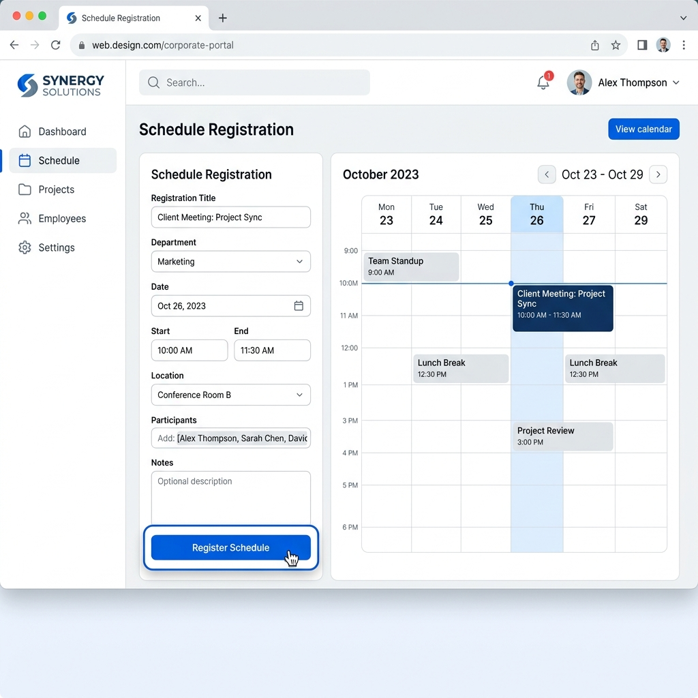

효율적인 협업을 위한 AI 회의록 및 실시간 통번역 가이드

회의를 시작하기 위해 우선 G Portal의 캘린더 메뉴에서 회의 일정을 등록해 주세요.
Webex 회의 중 하단의 '자막' 아이콘을 클릭하여 실시간 통번역 기능을 켤 수 있습니다. 지원되는 100여 개 언어 중 원하는 언어를 선택하세요.
이동 중에도 스마트폰의 Webex 앱을 통해 AI 회의록과 통번역 기능을 동일하게 이용할 수 있습니다.